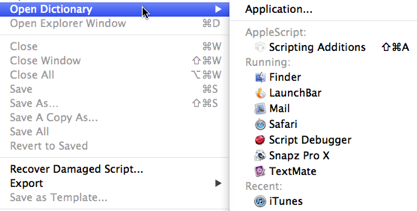

|
Scripting Additions |
|
The dictionary window for any installed scripting additions can be opened directly in Script Debugger.
-
Choose File > Open Dictionary. In the resulting hierarchical menu, you’ll see a list headed AppleScript. Choose Scripting Additions.
 -
In any open dictionary window, locate Scripting Additions under the AppleScript heading in the dictionaries list at the left. Click it.
-
In the dictionaries inspector, locate Scripting Additions under the AppleScript heading. Double-click it, or select it and click Dictionary, or select it and choose Open “Scripting Additions” Dictionary from the contextual menu.